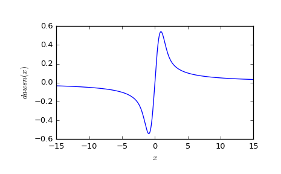

scipy.special.dawsn¶
-
scipy.special.dawsn(x) = <ufunc 'dawsn'>¶ Dawson’s integral.
Computes:
exp(-x**2) * integral(exp(t**2), t=0..x).
References
[R395] Steven G. Johnson, Faddeeva W function implementation. http://ab-initio.mit.edu/Faddeeva Examples
>>> from scipy import special >>> import matplotlib.pyplot as plt >>> x = np.linspace(-15, 15, num=1000) >>> plt.plot(x, special.dawsn(x)) >>> plt.xlabel('$x$') >>> plt.ylabel('$dawsn(x)$') >>> plt.show()
